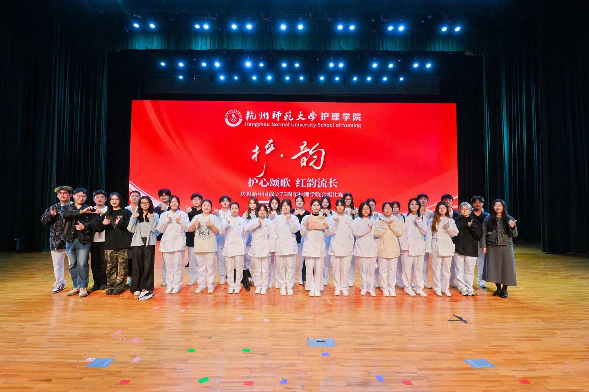
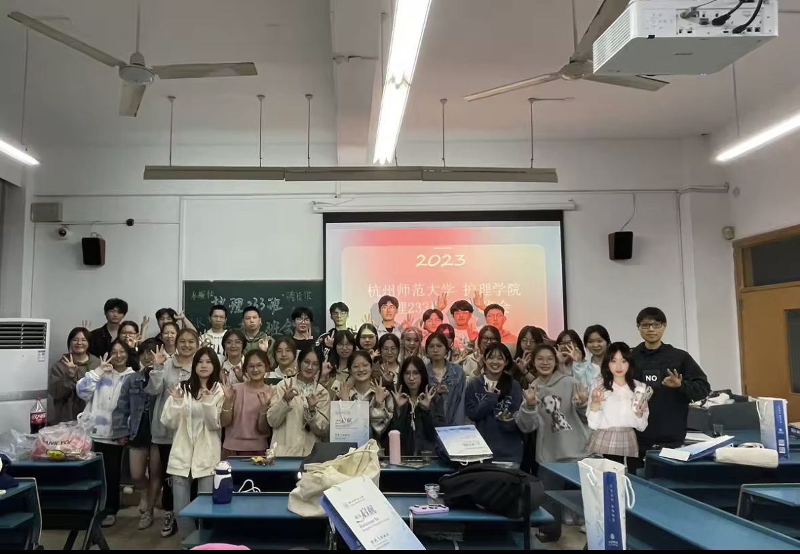
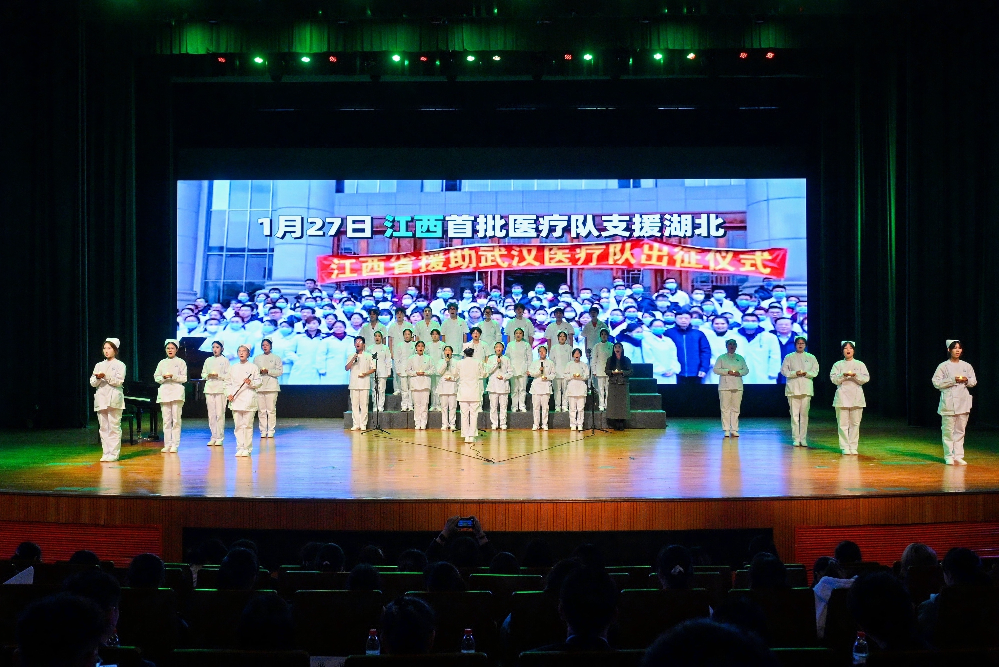
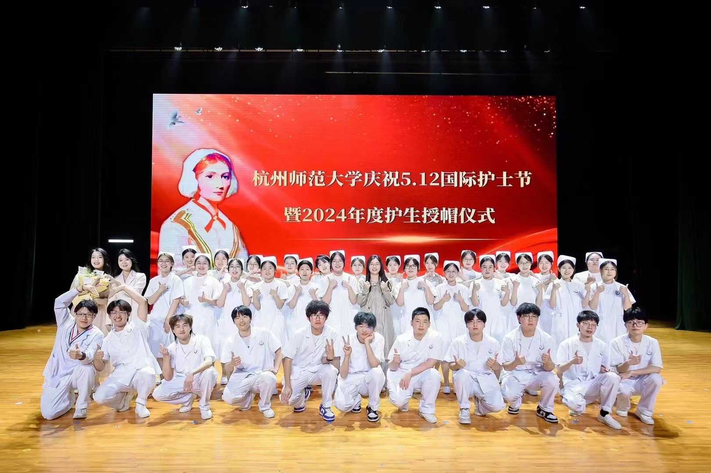

班级学风
护理233班秉持“关爱、专业、创新、奉献”的学风理念，致力于通过扎实的专业学习与丰富的实践活动，培养具有高度责任感与使命感的优秀护理人才。
班级文化建设
我们的班级文化强调团结、合作和尊重。通过组织各种文化活动和团队项目，我们希望能够增强班级凝聚力并丰富学生的校园生活。
活动公告
近期将开办班会，欢迎各位同学积极参与,具体时间请关注钉钉群内通知。


班级学习小组
班级通过制定学习计划和建立学习小组等方式，帮助学生养成良好的学习习惯，提高了自主学习能力。 定期的自我评估和反馈机制，使学生能够及时调整学习策略，提高学习效率。 良好的学习习惯对学生的长远发展至关重要，班级在这方面的成效和经验值得分享和推广。


学术研讨会
班级定期举办学术讲座和研讨会，邀请行业专家和学者分享最新研究成果，激发学生的学习兴趣和学术热情。 通过小组讨论和课题研究等形式，班级促进了学生之间的学术交流和合作，提高了学生的学术能力和创新思维。 学术活动的多样性和创新性，如专题讲座和实践机会的增加，为学生提供了更广阔的学术视野。